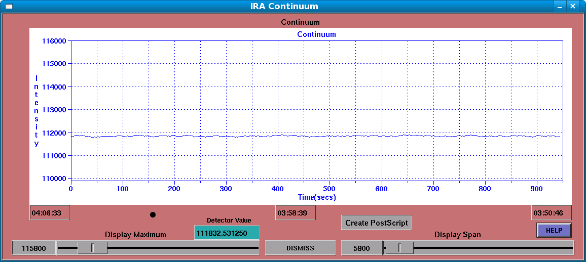

IRA Continuum Window
The IRA Continuum window is used to show a stripchart-like display of incoming values from the detector, new values arrive once per second, and are plotted on the Continuum display. If a secondary beam is in use (“split” mode), then the detected power from the secondary beam is shown in green, with the primary beam in blue:

Display Maximum
This control sets the maximum value to be displayed in the stripchart. It varies from 0 to 200000.
Detector Value
This text field shows the current value of the detector, and will be identical to that shown in the main IRA Control window. It is there as a convenience, to allow centering of the incoming samples, etc.
Display Span
This slider control sets the total span (minimum to maximum) of the current stripchart display.
Create Postscript
This pushbutton control allows you to make a postscript file of the current stripchart display. It will pop-up a file-browser to allow you to select a filename and directory for the resulting PostScript file.
DISMISS
This button control causes the IRA Continuum window to close. Even though the window is closed, new data are continuously added to the stripchart. The window may be brought back by using the corresponding “Show” button in the IRA Control window, in the Continuum area.
LMST Fields
There are 3 fields below the stripchart that show the approximate LMST that corresponds to that X position on the strip chart.